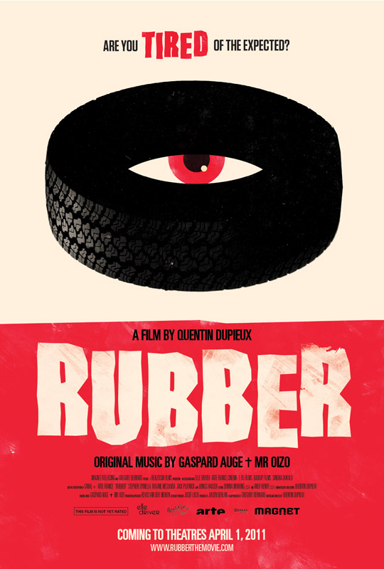
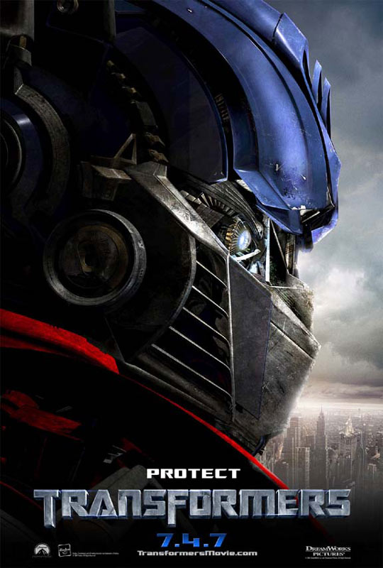

Vincent Hamonic
CEO @ Offresasaisir.fr
6 années d’expérience Webmarketing. Vision à 360° des techniques d’acquisition de trafic sur Internet. Double compétence marketing et commerciale avec une forte sensibilité aux contraintes techniques inhérentes aux projets web.
En savoir +


Quelques films que j'ai vus !
|  |
RubberUn pneu, ayant des pouvoirs psychokinétiques, commence une frénésie meurtrière en plein désert californien. Le spectacle est joué par des comédiens, et observé directement par des spectateurs qui sont en plein désert. Se constitue donc une double intrigue, à la fois celle autour du pneu, et celle autour des spectateurs du pneu. Les comédiens vont notamment chercher à éliminer leurs spectateurs dans le but de mettre fin à leur travail d'acteur. |
 |
GladiateurGladiator revisite le genre du péplum, dont un des derniers films majeurs était Spartacus, sorti en 1960. Le film ne se fonde pas sur des événements réels mais reprend les noms des empereurs Marc Aurèle et Commode, son fils. L'intrigue raconte la chute du général romain Maximus Decimus (Russell Crowe), destiné à devenir le successeur de Marc Aurèle, avant que l'empereur ne soit assassiné et le général brutalement trahi et laissé pour mort par l'ambitieux et maléfique Commode (Joaquin Phoenix) qui en profite pour s'installer sur le trône. |
|  |
TransformersTransformers est un film de science-fiction américain réalisé par Michael Bay et sorti en 2007. Produit par Paramount Pictures, il est adapté de la série d'animation homonyme diffusée de 1984 à 1987. |
Made with Love
Réalisé pendant Le Wagon session été 2016 !